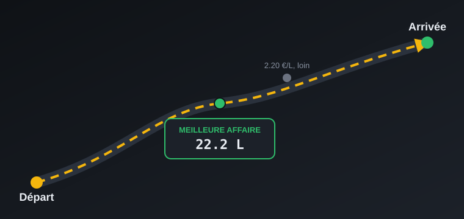
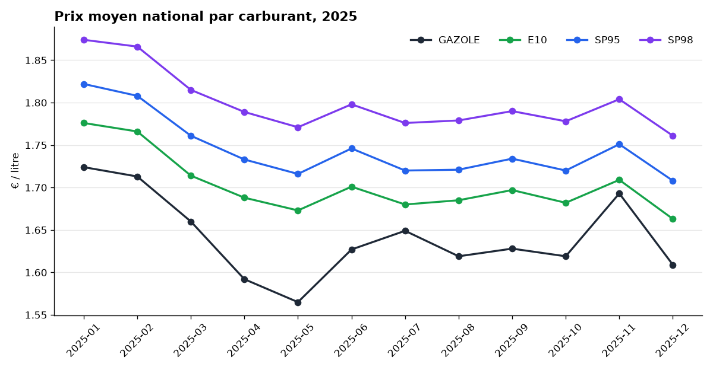
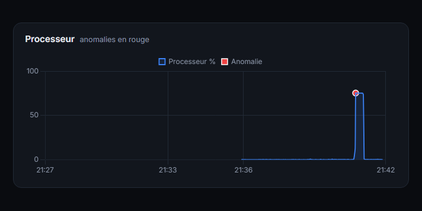
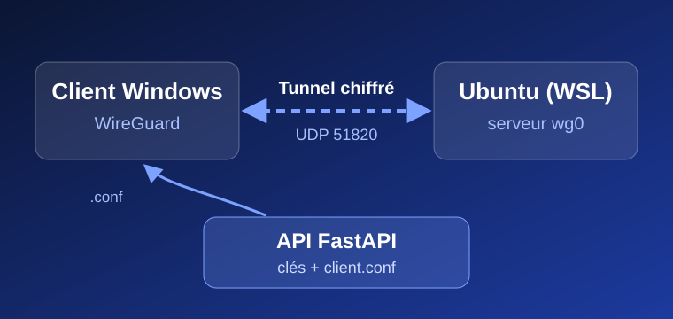
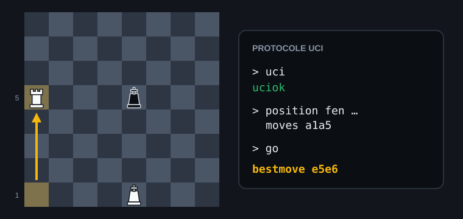
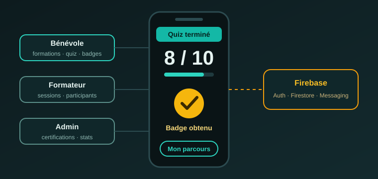
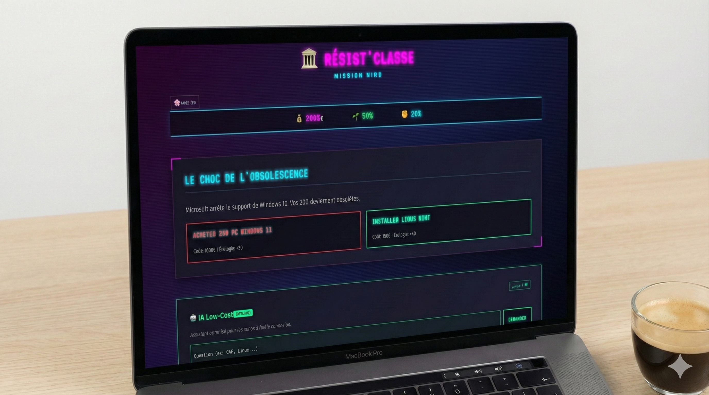
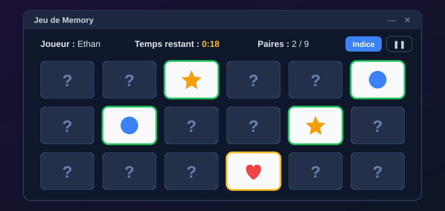

Fichiers bientôt en ligne
Réseau d'entreprise
Topologie complète simulée : routage, segmentation par VLAN et services DHCP, DNS et web.
Cisco Packet Tracer
Je suis en troisième année de BUT Informatique à l'Université Paris Cité (IUT Paris Rives de Seine), dans le parcours Data & IA. Ce qui me plaît, c'est de construire des outils qui servent vraiment : une application qui trouve la station-service la moins chère sur un trajet, un VPN monté de bout en bout, un moteur d'échecs qui dialogue avec une vraie interface.
En parallèle des cours, je m'implique dans des événements comme la Nuit de l'Info ou VivaTech. J'aime autant le travail en équipe que comprendre un problème jusqu'au bout.
BUT3 Informatique, parcours Data & IA
Stage de 3 mois ou plus, dès février 2027
Français et bengali (courant), anglais (B2), espagnol (B1)
Musculation, voyages, vie associative
Application web développée en équipe en une nuit sur le numérique responsable, avec la coordination Git de l'équipe.
Accueil et orientation de plus de 500 visiteurs internationaux par jour, en coordination avec une équipe de bénévoles.
Robot autonome : programmation en C++ et modélisation 3D. Projet sélectionné pour la finale académique et présenté devant un jury.
Université Paris Cité, IUT Paris Rives de Seine. Parcours Data & IA en troisième année.
Lycée Louis-le-Grand, Paris.
Projets personnels, scolaires et d'équipe. Cliquez sur un projet pour voir le code ou la démo.

Trouve la station la moins chère en tenant compte du vrai détour routier (itinéraires OSRM), à partir des prix officiels en temps réel.

Base PostgreSQL de 5,3 millions de prix officiels : modélisation, chargement ETL, contrôle qualité, analyses SQL avancées et index mesurés.

Surveille une machine Linux en lisant directement /proc et détecte les anomalies en temps réel (z-score et Isolation Forest), avec un tableau de bord web.

Tunnel VPN chiffré entre Windows et Ubuntu, avec une API FastAPI qui génère les clés et les configurations clients.

Moteur pour la finale Roi + Tour contre Roi, compatible avec les interfaces UCI comme ChessX. Clean Architecture et tests.

Application mobile de formation des bénévoles pour France Bénévolat, en équipe de 6. Mon rôle : tableau de bord bénévole, Firestore temps réel, tests.

Jeu de lettres en console : former des mots sur un rail de tuiles double face. Gestion mémoire corrigée et testée.

Refonte UI/UX et accessibilité de plusieurs pages, avec une partie d'administration.

Jeu narratif sur le numérique responsable, réalisé en équipe en une nuit. Éco-conçu, sans framework.

Plus court chemin avec Dijkstra sur des graphes et des labyrinthes, avec visualisation de l'exploration.
Topologie complète simulée : routage, segmentation par VLAN et services DHCP, DNS et web.

Jeu à deux joueurs avec interface graphique, gestion des tours et du score.
Une offre de stage, une question sur un projet ? Écrivez-moi, je réponds rapidement.